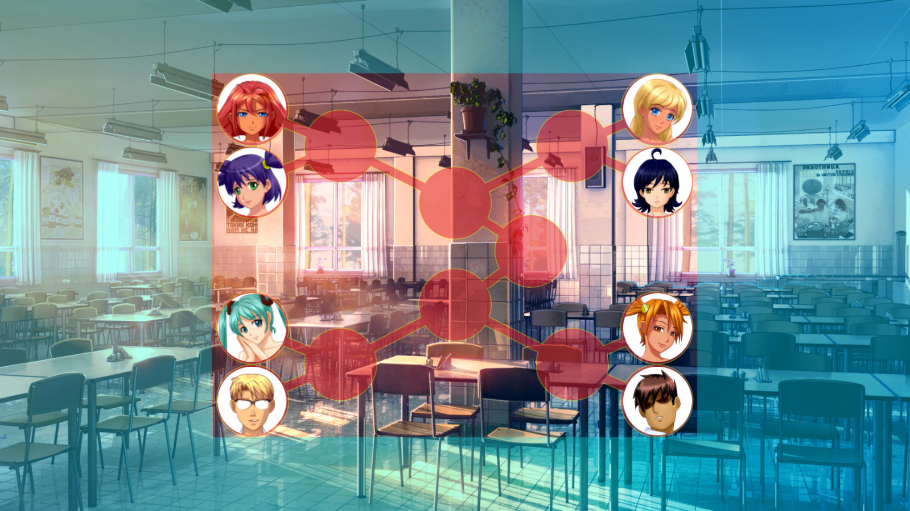
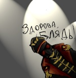
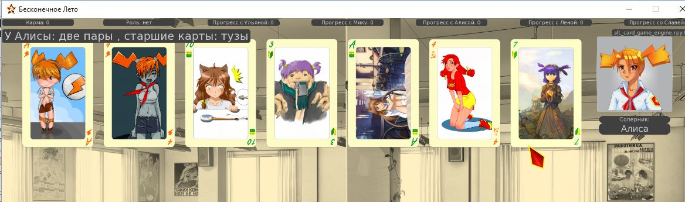
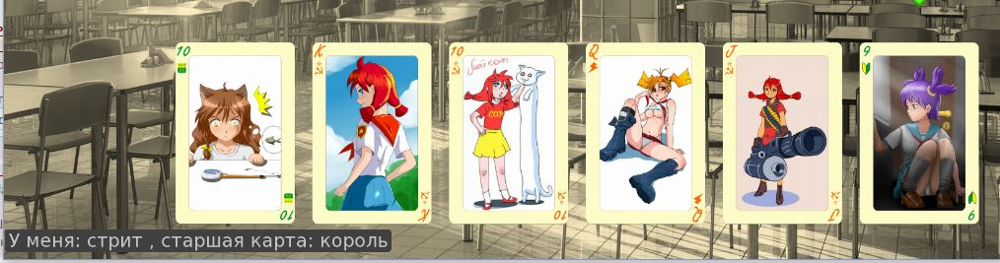
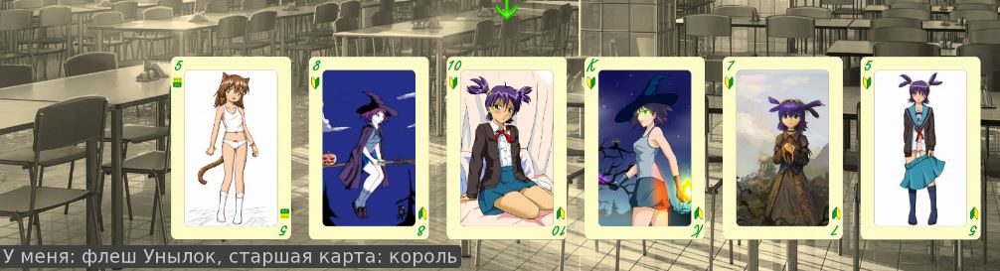

7 дней лета, билд 0.22с (Начало Классик-Слави)
Страница 1 из 4 • 1, 2, 3, 4 
7 дней лета, билд 0.22с (Начало Классик-Слави)
автор 7dl-kun в Вс 30 Авг 2015 - 3:58

Забирать здесь: https://yadi.sk/d/_r3sj4lrikSwJ
Чейнджлог:
1. Добавлен первый день классического рута Слави.
2. Добавлен выход на побочный ведьмо-рут Слави.
3. Карточный турнир теперь полностью рандомен, встретить можно кого угодно (допилена возможность устроить карточный матч, теперь это возможно с кем угодно, включая вторичных персонажей).
4. Множество логических, орфографически и прочих жуков - отловлены, придушены и выброшены.
Последний раз редактировалось: 7dl-kun (Вс 30 Авг 2015 - 17:52), всего редактировалось 3 раз(а)

7dl-kun- Находка для шпиона

- Сообщения : 3026
Дата регистрации : 2014-09-07
Откуда : здесь столько наркоманов?
Re: 7 дней лета, билд 0.22с (Начало Классик-Слави)
автор Arlien в Вс 30 Авг 2015 - 4:54
Arlien- Людовед

- Сообщения : 1322
Дата регистрации : 2014-09-08
Re: 7 дней лета, билд 0.22с (Начало Классик-Слави)
автор Moonshine в Вс 30 Авг 2015 - 5:25
Это да.Arlien пишет:...сон для слабаков.
Поехали.
День 1.
918 зеркало
1678 собой
- трейс:
I'm sorry, but an uncaught exception occurred.
While running game code:
File "game/scenario_alt/alt_day1.rpy", line 2634, in script
SyntaxError: unexpected EOF while parsing (alt_day1.rpy, line 2634)
-- Full Traceback ------------------------------------------------------------
Full traceback:
File "/home/dmt/.games/Everlasting Summer/renpy/bootstrap.py", line 265, in bootstrap
renpy.main.main()
File "/home/dmt/.games/Everlasting Summer/renpy/main.py", line 327, in main
run(restart)
File "/home/dmt/.games/Everlasting Summer/renpy/main.py", line 78, in run
renpy.execution.run_context(True)
File "/home/dmt/.games/Everlasting Summer/renpy/execution.py", line 509, in run_context
context.run()
File "/home/dmt/.games/Everlasting Summer/renpy/execution.py", line 288, in run
node.execute()
File "/home/dmt/.games/Everlasting Summer/renpy/ast.py", line 1486, in execute
if renpy.python.py_eval(condition):
File "/home/dmt/.games/Everlasting Summer/renpy/python.py", line 1338, in py_eval
return eval(py_compile(source, 'eval'), globals, locals)
File "/home/dmt/.games/Everlasting Summer/renpy/python.py", line 450, in py_compile
raise e
SyntaxError: unexpected EOF while parsing (alt_day1.rpy, line 2634)
Linux-3.19.0-26-generic-x86_64-with-debian-jessie-sid
Ren'Py 6.16.3.502
Everlasting Summer 1.0

Moonshine- Маргинал

- Сообщения : 341
Дата регистрации : 2015-05-05
Re: 7 дней лета, билд 0.22с (Начало Классик-Слави)
автор LRS в Вс 30 Авг 2015 - 7:43
День 2
строка 3268
$ alt_day2_necessary_done += 1
Получается, что если собирать подписи со Славей и помочь ей убраться, то за уборку подпись появляется лишняя
LRS- Ньюфаг

- Сообщения : 12
Дата регистрации : 2015-05-03
Возраст : 29
Re: 7 дней лета, билд 0.22с (Начало Классик-Слави)
автор Moonshine в Вс 30 Авг 2015 - 8:17
- Спойлер:
407 рыжыми
1572 Он!(?)
1722 По-моему лишнее, уже ведь выяснил имя.
1777 Уже предлагал записаться(Дрищу). И дальше немного повторяется ранее сказанное.
4063 маловажные и несложные(что?)
4453 Надо же посетить(но, возможно, уже посещал, хоть и не искупался)
4460 Уже мог спалить Ольгу на пляже к этому моменту. И в 3328 говорил об этом.
4631 Можно немного подправить предложение.
По ходу диалога возле столовой перед турниром Ульяна переодевается из СССРки в форму.
Так, отменяется. После четвертой переустановки турнир заработал. Поди разберись.
Последний раз редактировалось: Moonshine (Вс 30 Авг 2015 - 9:11), всего редактировалось 1 раз(а)
Moonshine- Маргинал
- Сообщения : 341
Дата регистрации : 2015-05-05
Re: 7 дней лета, билд 0.22с (Начало Классик-Слави)
автор LRS в Вс 30 Авг 2015 - 8:25
Moonshine пишет:
После ужина:
- Спойлер:
- Это, как я понимаю, из-за отсутствия турнира. Там значения нескольких переменных определяются. В зависимости от победителя, которыми могут теперь быть не только Семён и Алиса. А потом эти переменные проверяются на моменте с тортом
LRS- Ньюфаг
- Сообщения : 12
Дата регистрации : 2015-05-03
Возраст : 29
Re: 7 дней лета, билд 0.22с (Начало Классик-Слави)
автор Arlien в Вс 30 Авг 2015 - 9:04
- абсолюнто точно для слабаков:
12 - «отлеживаться от» чего-то вроде как нельзя, можно с чем-то или безо всего. Можно спиисать на авторскую структуру, кэша, но глаз спотыкается.
37- народоВ
57 – пропитаннЫЕ
145 – «зато», кажется, лишнее – между первой и второй секциями же нет противоречия.
167 – «какИМ-нибудь». Ну и второе «каким» лишнее.
234 – жизнИ
239 – неРВных
249 – лишняя запятая после «вон»
313 – от…чудился? Это гипотетическая производная «отчуждения»?.. никогда не слышал. Вордплей?..
351 – лишняя запятая
368 – «отличные» обязательно «от чего-то», лучше просто «иная»
473 – лучше «впрочем» вместо «часом», потом – «всЕ», не «всЁ», последняя «и» лишняя.
483 – «некоНтролируемое»
487 – «дьяволА»
506 – «искали источник»?
603 – устройСТво
720 – путЬ
746 – «вот», кажется, лишнее
767 – последняя запятая лишняя
837 – «К первым двум»
845 – надо бы в самое начало «Нет» добавить
847 – «чуть ли не С»
932 – «ненужнЫЕ», «верностЬ»
972 – подложеК
976 – голоВа
1063 – это должно быть под «иф нот тут_из» вроде как. Алсо лишняя запятая после «то есть»
1072 – лишняя запятая
1097 – каКИЕ-то
1158-1176 – тоже под альтерацию» иф нот тут_из»
1295 – лишняя запятая после «только»
1514 – лишняя запятая после «дороге»
1516 – где-то здесь должно быть «после», «спустя» или что-то такое
1524 – «всЯ недолга»
1546 – «то, Что»
1576 – лишнее «не» в конце
1668 – абзац сбился. Исправлять, наверное, лучше в последнюю очередь, шоб нумерация дальнейших очепяток не сбилась
1712 – уроВне
1726 – какая «дверь» мб «куда вела»?
1760 – срезУ
1870 – запятая либо после «только», либо после «там»
1986 – кнопкЕ
2099-2100 – это, наверное, тоже под элс надо убрать. В соло-проходе про нее и не вспоминается.
2190 – первая запятая лишняя
2200 – запятая после «кивнула», «посветиВ»
2483-2490 – под «иф нот тут_из»
2502 – тоже
2528 – «ранеНый»
2538 – «завесЫ»
2830 – «оно» вместо «то»
3000 – «сложенные» дублируется
3053 – «выключилось»-«отключенное», тавтология, треба заменить что-то
Arlien- Людовед
- Сообщения : 1322
Дата регистрации : 2014-09-08
Re: 7 дней лета, билд 0.22с (Начало Классик-Слави)
автор XOLODOS в Вс 30 Авг 2015 - 11:34

XOLODOS- Сыч

- Сообщения : 66
Дата регистрации : 2015-07-31
Возраст : 24
Откуда : Россия, Смоленская обл. г.Починок
Re: 7 дней лета, билд 0.22с (Начало Классик-Слави)
автор 7dl-kun в Вс 30 Авг 2015 - 11:49
Не лишняя. Подписей нужно четыре, а так как по факту обход представляет собой фарм лп, а у Слави их ощутимо меньше капает, убрал ненужные телодвижения, теперь для топ эффективности обхода выглядит как: площадь, кружки за штекером, волейбольный кружок, музыкальный кружок, чтобы чуть подфармить кармы.LRS пишет:А это баг или фича?
День 2
строка 3268
$ alt_day2_necessary_done += 1
Получается, что если собирать подписи со Славей и помочь ей убраться, то за уборку подпись появляется лишняя
7dl-kun- Находка для шпиона
- Сообщения : 3026
Дата регистрации : 2014-09-07
Откуда : здесь столько наркоманов?
Re: 7 дней лета, билд 0.22с (Начало Классик-Слави)
автор Moonshine в Вс 30 Авг 2015 - 12:37
- Спойлер:
Извиняюсь за оффтоп, но что за трек играет в старом лагере? А то мои попытки поискать по названию файла успехом не увенчались.
Moonshine- Маргинал
- Сообщения : 341
Дата регистрации : 2015-05-05
Re: 7 дней лета, билд 0.22с (Начало Классик-Слави)
автор 7dl-kun в Вс 30 Авг 2015 - 12:58
На выбор.
- Спойлер:
nowyouseeme.ogg - Stefano Mocini - Life
dead_silence.ogg - Charlie Clouser - Dead Silence
ambience_safe.ogg - Мikko Еarmia - Safe
7dl-kun- Находка для шпиона
- Сообщения : 3026
Дата регистрации : 2014-09-07
Откуда : здесь столько наркоманов?
Re: 7 дней лета, билд 0.22с (Начало Классик-Слави)
автор Moonshine в Вс 30 Авг 2015 - 13:04
Moonshine- Маргинал
- Сообщения : 341
Дата регистрации : 2015-05-05
Re: 7 дней лета, билд 0.22с (Начало Классик-Слави)
автор Draug в Вс 30 Авг 2015 - 13:06

Draug- Мизантроп

- Сообщения : 964
Дата регистрации : 2015-06-27
Возраст : 28
Откуда : Цитадель
Re: 7 дней лета, билд 0.22с (Начало Классик-Слави)
автор 7dl-kun в Вс 30 Авг 2015 - 13:11
Я скажу больше: в этом билде рандом вообще поставлен во главу угла.
7dl-kun- Находка для шпиона
- Сообщения : 3026
Дата регистрации : 2014-09-07
Откуда : здесь столько наркоманов?
Re: 7 дней лета, билд 0.22с (Начало Классик-Слави)
автор Draug в Вс 30 Авг 2015 - 13:14
Draug- Мизантроп
- Сообщения : 964
Дата регистрации : 2015-06-27
Возраст : 28
Откуда : Цитадель
Re: 7 дней лета, билд 0.22с (Начало Классик-Слави)
автор Дядя Вармог в Вс 30 Авг 2015 - 13:20

Дядя Вармог- Ньюфаг
- Сообщения : 7
Дата регистрации : 2015-06-01
Re: 7 дней лета, билд 0.22с (Начало Классик-Слави)
автор 7dl-kun в Вс 30 Авг 2015 - 13:21
7dl-kun- Находка для шпиона
- Сообщения : 3026
Дата регистрации : 2014-09-07
Откуда : здесь столько наркоманов?
Re: 7 дней лета, билд 0.22с (Начало Классик-Слави)
автор Moonshine в Вс 30 Авг 2015 - 16:02
- Спойлер:
Рандом в карточной игре действительно добавил ей реиграбельности. Теперь, наверно, даже пропускать её не буду.
Впервые для меня основная сюжетная линия в 7дл полностью затмила все остальное. Нет, я и раньше не считал основную историю плохой. Но она шла по большей части фоном. На первом месте(по крайней мере для меня) была возможность главгероя вновь пережить давно забытое, немного перестроиться, использовать выпавший шанс. А может, найти ту самую. События в лагере были лишь своего рода девайсом для достижения этого. Здесь же, начиная с момента с гуделкой, я вообще забыл обо всем. Какое тут наслаждение жизнью да общение со Славей и вообще с кем-либо. Лагерь и попадание в него сами по себе вещи довольно странные. Но герой практически не заглядывал за кулисы.
Фирменнаякартинкаперегаррета.jpg
И можно было чувствовать себя более-менее спокойно.
Сейчас же это спокойствие ощутимо порушилось. И как никогда остро встает вопрос: "Что за чертовщина тут вообще происходит?!". Чувства и новообретенная молодость выходят в окно.
Нет, я вовсе не говорю, что это плохо. Происходящее было по-настоящему интересно, градус интриги был весьма велик. И я действительно жду момента, когда мы получим полную картину. Просто я ловил себя на мысли, что мне в общем-то наплевать, с кем там герой шарится по катакомбам. Мне, как читателю, важными казались лишь ОТВЕТЫ. Хотя Семен и был несколько иного мнения.
Словно у произведения изменился жанр. Как-то так.
На четвертый день казалось, что отношения Семена со Славей начинаются с нуля. Будто и не было их прошлых эскапад. Выглядело немного странно. Возможно, такова и была задумка.
Сама же Славя время от времени откровенно раздражала. Что-то новенькое.
Например, Семена зовут на техноквест с дискотеки, а он? О ужас, не забывает про её просьбу!
"Семён! Как ты можешь говорить такое!"
"Я была о тебе гораздо лучшего мнения, а ты товарищам помочь не хочешь!"
И без тени сарказма ведь.
Полегче на поворотах, дорогая, сама же просила еще танец. Или Семен должен был сломя голову бежать, даже слова тебе не сказав? Оценила бы не сдержанное обещание, пусть и на счет менее общественно полезной вещи?
Я, конечно, понимаю - альтруизм и все такое. Но тут уже фанатизмом попахивает.
Та ли это девушка, которая не стала сдавать Семена, когда он с Ульяной стащил конфеты?
Еще дальше будет момент, когда даже Семен подумает, что "Она говорила это слишком горячо."
Если это просто отсылки к влиянию гуделки и прочих методик промывания мозгов, тогда все замечательно работает.
Момент, который, возможно, следует подправить:
День 3
10261 Славя-то без проблем полезет.
Знает ведь уже, что она высоты побаивается.
Сам же утром четвертого дня об этом вспомнит в 20 строке.
Еще парочку видел, но забыл уже. Напишу, когда на свежую голову перечитаю.
Moonshine- Маргинал
- Сообщения : 341
Дата регистрации : 2015-05-05
Re: 7 дней лета, билд 0.22с (Начало Классик-Слави)
автор openplace в Вс 30 Авг 2015 - 16:08
Залез в файл карточной игры. Впечатлился: при желании целый вечер, а то и больше, можно убить на игру и ни разу не повториться. Но это как-нибудь позже, а пока - текстовые правки:
- alt_res_card_shuffles.rpy:
106 полпути
315 компания
616 восторженно
761, 845, следующая
1218 священен
1273 правильно
1556 болельщикам
1738 самодовольные
1757 потолку
1808 позабавила
1948 легенды
2007 сочувственно
2030 не поднимая
2191 us "Я победила! И теперь суперприз мой! Моооооой!"
2369 dv "Ты победил в споре и турнире."
2501 расскажет
2531 сверхъестественного
2552 рассеянного
2663, 2788, 2916, 3042, 3170, 3295, 3431, 3570 присоединилась
2676, 2801, 2929, 3055, 3183, 3308 но она, похоже, услышала
3727 склонен

openplace- Хикка

- Сообщения : 111
Дата регистрации : 2015-05-02
Re: 7 дней лета, билд 0.22с (Начало Классик-Слави)
автор 7dl-kun в Вс 30 Авг 2015 - 19:06
7dl-kun- Находка для шпиона
- Сообщения : 3026
Дата регистрации : 2014-09-07
Откуда : здесь столько наркоманов?
Re: 7 дней лета, билд 0.22с (Начало Классик-Слави)
автор BlackDoomer в Вс 30 Авг 2015 - 19:30

BlackDoomer- Хикка
- Сообщения : 165
Дата регистрации : 2015-07-31
Откуда : СПб
Re: 7 дней лета, билд 0.22с (Начало Классик-Слави)
автор openplace в Вс 30 Авг 2015 - 23:29
- alt_sl_route.rpy:
18 сарафанчике
24 Поскользнулся
107 поинтересовался
195 всегда
311 удостоила
346 спешащего
651 работающий
706 выхватывая
723 напаяно
896 Собравшиеся
926 девятимиллиметровыми
962 спектакль
975 очередями
977 элементарное
1090 коллектива
1597 нагнетания
1618 Аккуратно
1640 каждая минута, проведённая
1731 хрущёвками
1752 стороны
1806 такими
1811, 1856, 1980 сандалии
1833 лестницу в три прута, ведущую
1947 серьёзным
1961 ОБЖ-сентенцией
1995 повыламливало
2013 какие-то
2190 Чувствуя, как
2265 трапециевидная
2550 показал, как идти
2856 по периметру поляны, она
2932 стоящую
3022 cs "Ты."
3039 компьютером
openplace- Хикка
- Сообщения : 111
Дата регистрации : 2015-05-02
Re: 7 дней лета, билд 0.22с (Начало Классик-Слави)
автор openplace в Пн 31 Авг 2015 - 0:32
- Спойлер:
alt_day2.rpy
Идём со Славей обходить лагерь, приходим на спортплощадку.- Код:
1946 "Четверть часа неспешного шествования, я вышел на уже знакомое футбольное поле."
- Код:
if alt_day1_random_val != 1:
"Четверть часа неспешного шествования, я вышел на уже знакомое футбольное поле."
else:
"Четверть часа неспешного шествования, и я вышел на футбольное поле."
alt_day3.rpy- Код:
748 show sl smile pioneer with dissolve
- Код:
760 sl "Ладно, готовься пока, я сбегаю переоденусь."
- Код:
747 "Сегодня Славя поступила ровно так же, как и вчера — она взяла меня за руку и отвела на наше место, невзирая даже на возмущённый взгляд, коим кое-кто одарил нас обоих."
748 if alt_day2_sl_help:
show sl smile sport with dissolve
sl "Я не забыла."
"Шепнула она."
me "О чём ты говоришь?"
sl "О твоей помощи, разумеется."
sl "Но просто сказать «спасибо» было бы недостаточно."
"Конечно, девочка, моих мучений на площади было недостаточно."
sl "Поэтому… Сегодня ты снова поднимаешь флаг!"
me "Что? Нет! Нет, даже не думай об этом."
"Она рассмеялась."
sl "А я и не думала, это ещё вчера было решенным фактом."
sl "Ладно, готовься пока, я сбегаю переоденусь."
hide sl with dissolve
else:
show sl smile pioneer with dissolve
Далее, игра в волейбол, младшие отряды:- Код:
2200 "Мяч взял третий отряд, сторону поля — второй, поворотив соперников спиной к солнцу."
А после этой- Код:
2335 "Я бы даже ставок делать не стал, настолько это предсказуемо…"
А после- Код:
2341 "Но из репродуктора уже звучит родной всякому пионерскому уху горн. Значит, пора питаться!"
alt_sl_route.rpy- Код:
149 "Такое ощущение, будто в последний момент можно успеть навести идеальный порядок, коль скоро за предыдущие двадцать дней это никому не удалось."
- Код:
475 для кого-то же планируют крутить концерт после полдника
- Код:
1089 "У нас это были рыжие, во втором отряде снова вёл свой бенефис любимец библиотекарш и матрон в возрасте, кудрявый Данечка, и оттуда доносились взрывы смеха."
- Код:
if alt_day2_lib_done:
"У нас это были рыжие, во втором отряде снова вёл свой бенефис любимец библиотекарш и матрон в возрасте, кудрявый Данечка, и оттуда доносились взрывы смеха."
else
"У нас это были рыжие, во втором отряде снова вёл свой бенефис кудрявый малец, и оттуда доносились взрывы смеха."
- Код:
1090 "Третий отряд представлял собой чуточку более ровную массу, но там наблюдалась картинка с добровольно отстранившимися от коллектива — мне кивнул тот самый знакомый красноглазый пионер, что некогда предупреждал меня об опасности дома рыжих."
- Код:
if alt_day2_event_dv_us_house == True:
"Третий отряд представлял собой чуточку более ровную массу, но там наблюдалась картинка с добровольно отстранившимися от коллектива — мне кивнул тот самый знакомый красноглазый пионер, что некогда предупреждал меня об опасности дома рыжих."
else
"Третий отряд представлял собой чуточку более ровную массу, но там наблюдалась картинка с добровольно отстранившимися от коллектива"
- Код:
1371 "Данечка был весел и доволен собой — на стуле вожатой второго отряда обнаружилась канцелярская кнопка, и она, взвизгнув, вскочила."
- Код:
if alt_day2_lib_done:
"Данечка был весел и доволен собой — на стуле вожатой второго отряда обнаружилась канцелярская кнопка, и она, взвизгнув, вскочила."
else
"Кудрявый пионер со второго отряда был весел и доволен собой — на стуле его вожатой обнаружилась канцелярская кнопка, и та, взвизгнув, вскочила."
- Код:
1882 "Застенки инквизиции на советский манер.{w} Но видно, что строили с душой и совестью — несмотря на пятнадцатилетнее запустение, выглядело здесь всё крепким и добротным.{w} Разве что самую чуточку запылившимся."
- Код:
2422 "Два световых луча скрестились на противоположной стене небольшой комнаты."
- Код:
if not alt_day4_sl_un_rej or not alt_day4_sl_tut_lf
"Два световых луча скрестились на противоположной стене небольшой комнаты."
else
"Световой луч оказался на противоположной стене небольшой комнаты."
- Код:
2599 me "И давайте уже выбираться отсюда."
- Код:
if not alt_day4_sl_un_rej or not alt_day4_sl_tut_lf
me "И давайте уже выбираться отсюда."
else
me "И давай уже выбираться отсюда."
Подтверждаю, есть такое. Нужно условие появления, что-то наподобиеBlackDoomer пишет:Поиски Шурика. Если пошёл один. При встрече с Шуриком картинка идёт с девчёнками, которых нет.
- Код:
if not alt_day4_sl_un_rej or not alt_day4_sl_tut_lf
show sl normal pioneer at left with moveinleft
show un normal pioneer at right with moveinright
else
pass
openplace- Хикка
- Сообщения : 111
Дата регистрации : 2015-05-02
Re: 7 дней лета, билд 0.22с (Начало Классик-Слави)
автор nuttyprof в Пн 31 Авг 2015 - 0:42
7dl-kun пишет:
Карточный турнир теперь полностью рандомен, встретить можно кого угодно (допилена возможность устроить карточный матч, теперь это возможно с кем угодно, включая вторичных персонажей).
Новый турнир - класс, гораздо интереснее стало.
- и появились кой-какие мысли по этому поводу:
Все бы хорошо - но проблему заметил давно: пионеры в карты не умеют.- почему именно:
Дело в том, что в движке игры подсчет очков - только в конце, в ходе игры соперник "не знает", что у него на руках, карты мешает при защите рандомно, в том числе может поставить на обмен карту из выигрышной комбинации.
Так же рандомно соперник выбирает карту у меня (Дваче разве что-то там пытается, но это все не то).
Так вот решил было я научить Двачевскую играть в карты (обучение в процессе), уже знает что именно у нее на руках и пытается это спасти (т.е вытащить если у нее карту из комбинации - постарается забрать ее обратно).- например:

А потом вспомнилось, что Сэмэн наш что-то про "техасский холдем" упоминал...- почему бы и да?:


- Потому хотелось бы поинтересоваться, будет ли востребовано:
Все нижеперечисленное принципиально реализуемо, что-то в процессе, кое-то почти готово, на что-то расписан алгоритм, но кода еще нет.
- для любителей покера - карточный турнир по правилам покера;
(кстати, в движок заложена возможность играть по 6 или по 7 карт на руках и это можно выбрать)
- анимация аватарки соперника (Алиса или, скажем, Женя, могут сидеть и с покерфейсом; а вот на лице той же Мику или, скажем, Ульянки эмоции при проигрыше\выигрыше или хорошей\плохой комбинации отразились бы, думаю;
(в движок это также заложено, даже заготовлен сет эмоций для Алисы, Ульяны, Лены и, ЕМНИМС, Слави- но нигде это не используется, как выставили "нейтрал" по умолчанию - так и играем)
- поменять картинки на картах (а то нашли Сёма с Леночкой карты в столе у Виолы картыс голыми девкамихитрые, а играют обычными, ну прямо как образцовые пионеры);
вот тут понадобятся 12 (14) картинок минимум (лучше, конечно 52), но на столе больше 12 (14) карт не появляется; масть\значение будут из полной колоды
- разные навыки игры в карты у соперников; например:
Алиса - никакого рандома, не ошибается;
Ульянка - в карты не умеет, ходы рандомные;
Шурик - умеет, но может ошибиться, скажем, 1 раз из 5;
..... и т. п.
"Романсабельные" девчонки (в зависимости от ЛП) могут сыграть в "поддавки" - опционально.
- другие общеизвестные карточные игры с быстрым циклом (да хоть бы "дурак" и "очко"), в том числе - на троих и на четверых.
(навеяло случаем в руте Алисы, когда Семён, Алиса и Лена собрались было в картишки перекинуться, да вожатая помешала).
на троих-четверых, в принципе, и покер можно... теоретически.

nuttyprof- Хикка
- Сообщения : 102
Дата регистрации : 2015-05-25
Возраст : 45
Откуда : Юг
Re: 7 дней лета, билд 0.22с (Начало Классик-Слави)
автор Arlien в Пн 31 Авг 2015 - 0:47
- Спойлер:
Впечатления в целом средне-положительные (исключая ведьморут).
Слави мало, но для классик-рута так скорее всего и должно быть.
Славя местами раздражает - но по крайней мере тем же образом, что и другие девочки на других рутах. Нормально и уместно.
Система СП... В принцпе не порочна, но в нынешнем виде слишком... Как это говорят буржуины? Слишком ин йор фейс.
Забивает здравый смысл. Выборы выглядят как "ои веи я такая тютя подкаблучник никчемушник" вс "АГРХ я кртой альфач со Своим Мнением, назло подлому генофонду отморожу уши!".
Конечно, это вполне реалистично - люди в общем и целом редко думают над какой-либо ситуацией дольше пяти секунд, да и вообще история не про ситуации, а про людей, но мотивация этих людей огорчает.
Складывается впечатление, что главным действующим лицам вообще плевать и друг на друга, и на окружающее. Славя действует просто чтобы Все Было Как Она Сказала, Семен действует просто затем, чтобы побыть ссаной тютей\Мужиком Со Своим Мнением.
Зачем нужна нужна хрупкая Леночка, от которой (по ее обычному аппиренсу) будет больше вреда, чем пользы в походе черт знает куда, зачем там нужен контуженный, теряющий сознание Семен и т.п. - никто по факту не задумывается, все просто играют свои роли - бульдозера, тюти, Мужика и т.п.
Ладно, ладно, простите, драматизирую. По конкретике.
Сначала логика.
1. Потерю ЛП на походе\не-походе в клуб кмк следует унифицировать. То, что разные личности при одном и том же действии меняются по-разному - это в принципе правильно. Теоретически верно даже то, что разные личности могут из одной и той же ситуации извлечь как потерю, так и набор ЛП. Но не в отсутствие второго юзера ЛП.
С точки зрения Слави ситуация при любом отыгрыше выглядит совершенно идентично - Сема взял и пробил рандеву.
2. По флагу тут_из=фолс кооперативное прохождение шахт должно ИМХО закрываться намертво. Ну серьезно - человек среди бела дня сознание потерял. Теперь хочет идти по ночному лесу в спасательную операцию. Серьезно?.. это ведь блин не просто безответственно, это еще и угроза всей поисковой пати - если он отрубится еще раз, операцию сворачивать придется и буксировать в медпункт.
3. По флагу альтернативного первого дня по идее должен закрываться выбор "А зачем она нам нужна", может - все попытки выставить Лену из пати. Семен уже видел, что девочка в форме и имеет неплохую реакцию, вопрос о полезности уже как бы стоять не может.
По худчасти.
1. 1120 - "протекающие процессы"?.. оригинально, но не слишком ли.. специфичный лексикон? Сначала протекающие процессы, а потом ты зарастаешь бородой, запираешься дома и изобретаешь ДДД.
2. 1202-1239 - складывается впечатление, что тут не о человеке заботятся, а то ли мстят никчемному тюте за то, что он такой никчемный (как же, посмел согласиться с гнусным генофондом!), то ли избавляются от докуки. Это так и запланировано?
Ну и отдельно за ведьморут. Если в самых 'удачных' моментах до этого "насквозь позитивному" хотелось надавать по морде, то тут хочется просто свернуть шею. Натурально. Потому что психотропка - это уже не сиськами трясти где не надо и не гадить по мелочи, это залет уровня уголовного дела и лет эдак десяти строгача.
Не сердитесь на экспрессию, просто максимально точно описываю впечатления.
Интригует, трогает, местами царапает, местами преподносит сюрпризы. Тот самый цвет, тот самый размер.
Arlien- Людовед
- Сообщения : 1322
Дата регистрации : 2014-09-08
Страница 1 из 4 • 1, 2, 3, 4